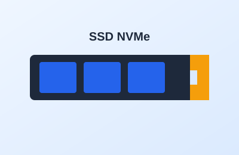

Tema 4 de 5
El almacenamiento (SSD): donde viven tus archivos

Descripción
El almacenamiento guarda de forma permanente el sistema operativo, los programas y tus archivos. Hoy los SSD, que no tienen partes móviles, son mucho más rápidos que los discos duros tradicionales (HDD).
Un SSD NVMe en formato M.2 se instala directamente sobre la placa madre, sin cables. Un buen esquema es un SSD de 512 GB para el sistema y, si necesitas más espacio, un disco adicional para archivos.
Datos clave
- SSD: arranca el sistema en segundos.
- NVMe M.2: el más veloz, se conecta directo a la placa.
- HDD: más barato por GB, ideal para archivos grandes.
Cómo se instala
- Ubica la ranura M.2 de la placa madre.
- Inserta el SSD en diagonal y presiónalo hacia abajo.
- Asegúralo con el tornillo pequeño.